A small backyard doesn't rule out a genuinely great pool, it just changes which decisions matter most. Shape, placement, and a few smart design tricks tend to do far more for how a pool feels than overall square footage ever will.
None of the ideas below require a sprawling lot to pull off. Most work specifically because the yard is small, turning limited space into a design advantage rather than a compromise.

20 Small Backyard Pool Ideas
1. Small Backyard Swimming Pools With Fire Features
Fire and water together are a dependable combination that rarely falls flat.
A fire bowl or a linear flame feature adds real drama without taking up much physical space, and it draws the eye upward, which helps the whole area feel taller than it is.
Positioned well, a fire feature can become the pool area's natural evening focal point, especially once the sun goes down.
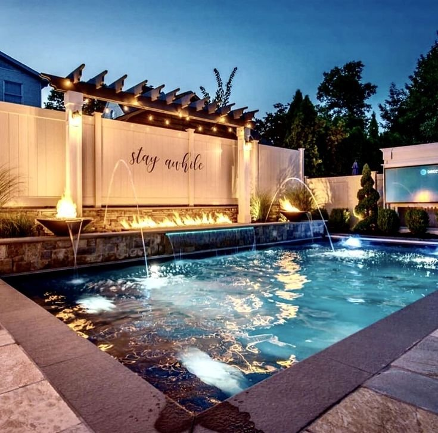
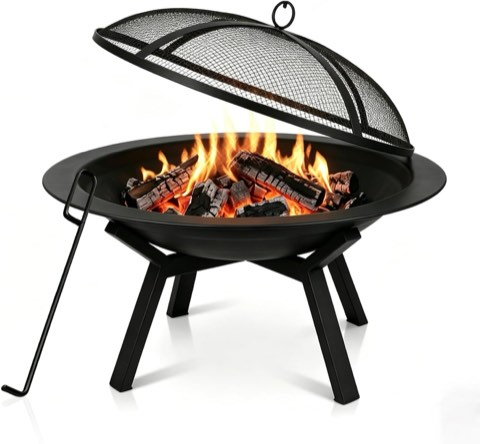
Heavy Duty Round Steel Wood Burning Fire Pit Bowl for Backyard and Patio
Shop on Amazon2. Pools Paired With Outdoor Showers
An outdoor shower adds genuine function without actually stealing much space from the yard.
A slim shower setup keeps indoor mess to a minimum after a swim, and it doubles as a visual anchor near the pool.
It's a small addition that pushes the whole space a little closer to resort territory, even in a genuinely tight footprint.
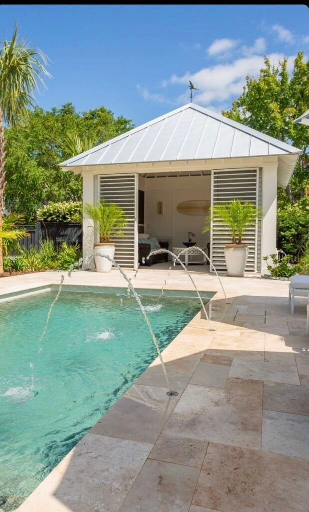
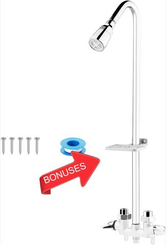
Artiwell Outdoor Shower Fixture System with Double Handle Utility Faucet
Shop on Amazon3. Multi-Level Pool Zones That Add Interest
Levels create visual separation between areas without needing an actual wall to do it.
Steps, platforms, and raised sections naturally define different zones, a swimming area, a lounging spot, an entry point, adding structure without clutter.
This approach suits a social backyard particularly well, since it quietly organizes the space without making it feel busy.
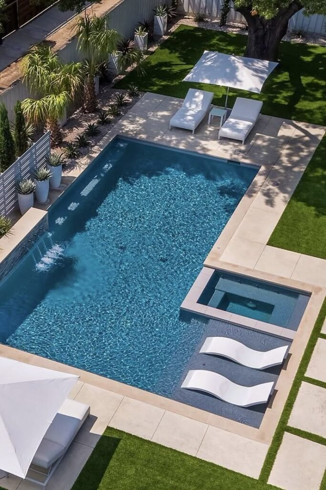
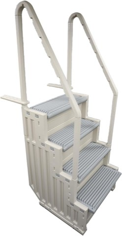
Confer Plastics Step-1X Above Ground Pool Entry System with Dual Handrails
Shop on Amazon4. Narrow Decking That Frames the Pool Perfectly
Decking eats up space fast when it's sized too generously for a small pool.
A wide deck tends to overwhelm a compact pool, while a narrow one frames it instead, leaving more of the actual yard usable for other things.
Trimming deck width down to what's actually needed is one of the simpler ways to reclaim usable space in a small backyard.
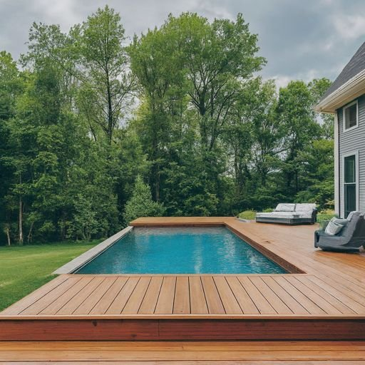
5. Dark-Finish Pools That Add Depth
A light-colored pool reads as clean, but a dark-finished one reads as deep, a useful illusion in a compact space.
Darker finishes reflect less light, which creates the impression of greater depth and makes a smaller pool feel more substantial than it actually is.
The look reads as bold rather than heavy, and it's become a far more common choice than it once was for exactly this reason.
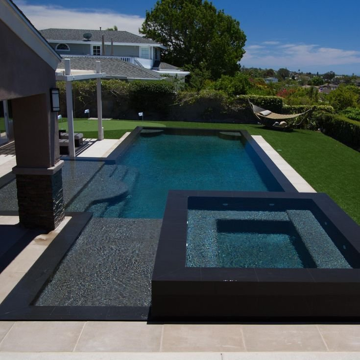
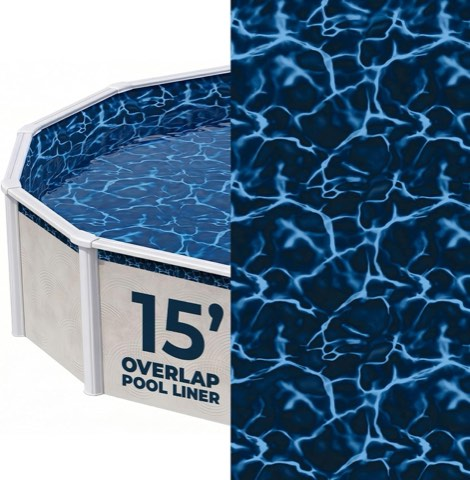
Blue Wave Evening Bay 15 Ft Round Overlap Pool Liner for Above Ground Pools
Shop on Amazon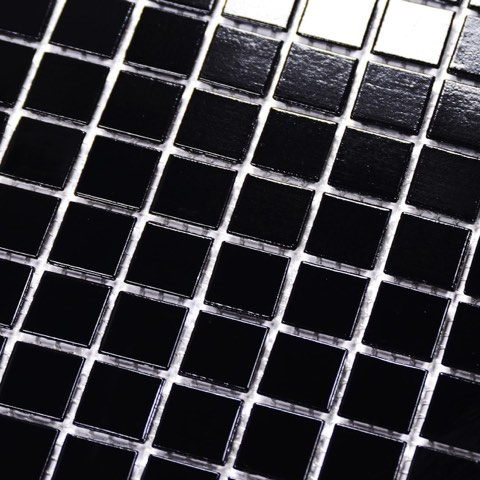
Black Glass Mosaic Tile for Swimming Pools and Backsplashes, 11.5 sq ft
Shop on Amazon6. Lighting That Transforms Small Pools at Night
Lighting does more than help with visibility after dark, it genuinely sets the mood for the whole space.
Soft lighting extends how the pool reads visually after sunset, adding depth and a bit of drama without introducing any new physical elements.
Layering a few different light sources, rather than relying on one, tends to produce a softer glow instead of a single harsh glare.
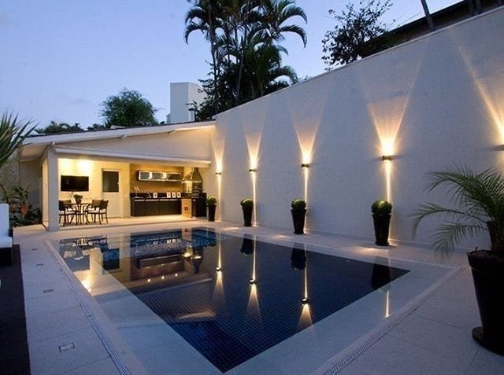
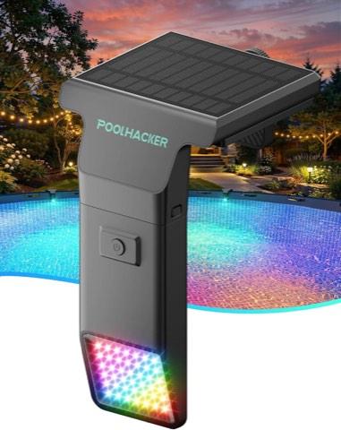
Solar Pool Lights, 10 Color 4 Mode LED, for Inground and Above Ground Pools
Shop on Amazon7. Pools With Built-In Planters
Rather than scattering potted plants around the deck, integrating planters directly into the pool structure looks considerably more intentional.
It keeps the whole layout feeling clean and planned rather than assembled after the fact.
A few well-placed built-in planters can turn an otherwise basic pool into a genuine design feature entirely on their own.
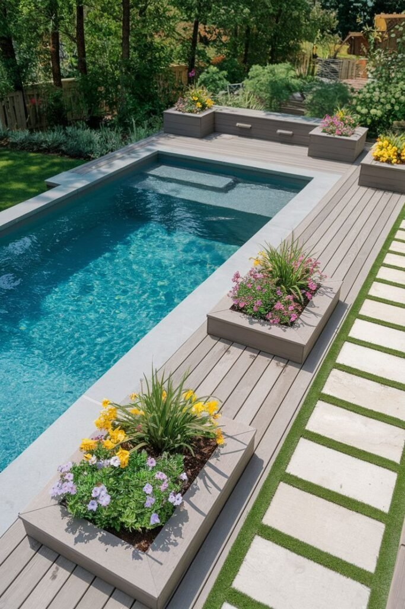
8. Vertical Garden Pools That Add Green Without Crowding
When the ground itself is already at capacity, going vertical is the natural next move.
A vertical garden softens the hard surfaces around a pool without stealing any floor space, and it also boosts privacy considerably faster than a tall fence would.
Using greenery to frame a pool rather than fencing it in tends to read as softer and more intentional overall.
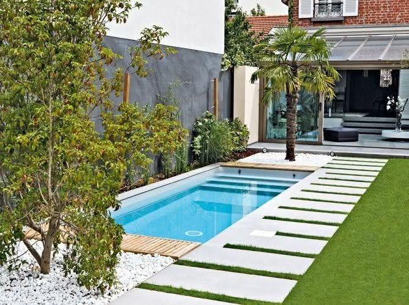
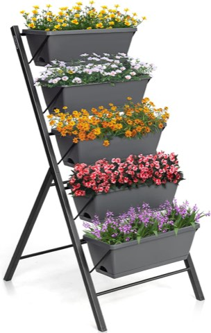
COSTWAY 5-Tier Vertical Raised Garden Bed Planter Box with Drainage Holes
Shop on Amazon9. Sun Shelf Pools That Replace Extra Furniture
A sun shelf tends to get overlooked, but it quietly solves a real space problem.
It lets people lounge directly in shallow water without needing separate pool chairs or daybeds nearby, which frees up deck space that would otherwise go to furniture.
For a small backyard, that trade-off is usually worth it, less furniture, more usable room.
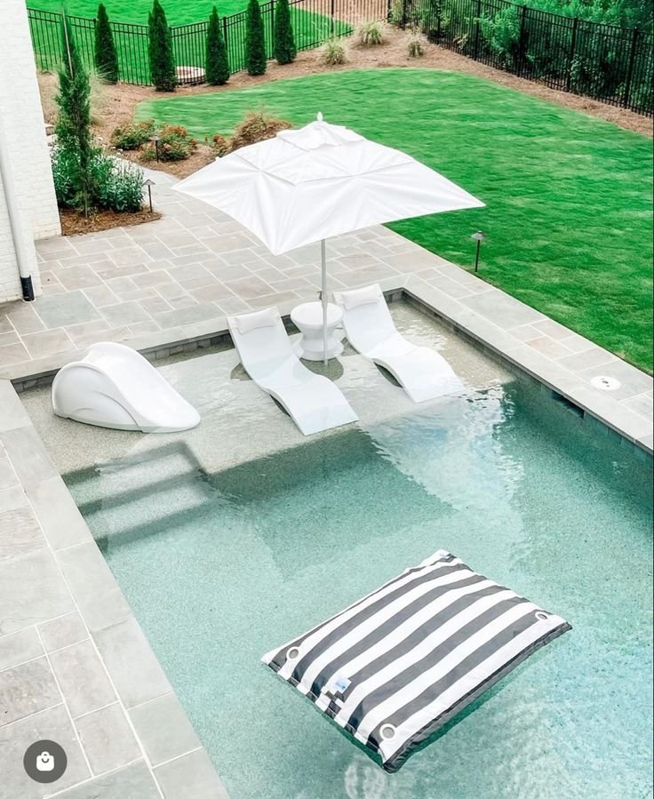
10. Glass-Edged Pools That Visually Disappear
Glass panels do real work in a tight backyard by removing the usual visual barrier a solid fence or wall creates.
With nothing blocking the sightline, the eye travels further, which tricks the brain into reading the space as larger than it actually is.
It's a particularly strong choice for a pool edge that faces a view worth keeping visible, rather than boxing it in.
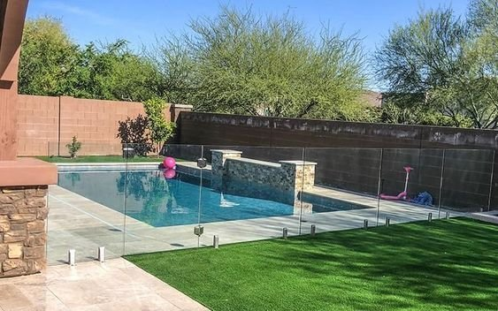
11. Small Backyard Pools With Water Features
When space feels tight, letting sound do some of the work helps distract from the limited square footage.
A waterfall, spillway, or small fountain adds both movement and sound, making the pool area feel more dynamic without taking up any extra room.
A subtle water feature tends to feel calming rather than overwhelming, which keeps the small-space illusion intact rather than fighting it.
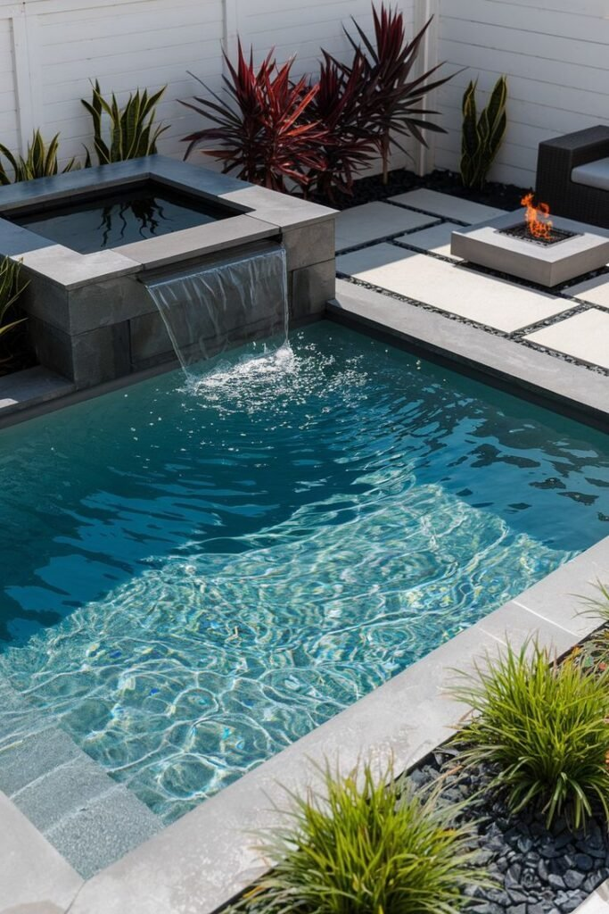
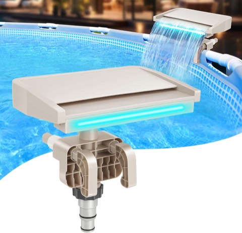
Hanaoyo LED Pool Waterfall Fountain, 7 Lighting Colors, for Above Ground Pools
Shop on Amazon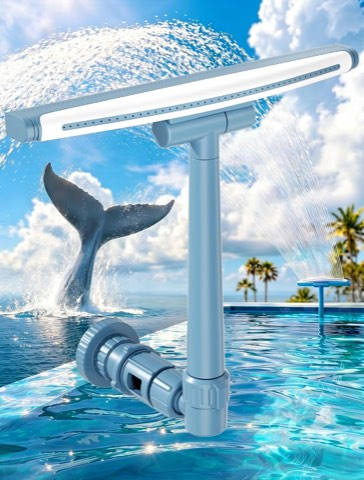
POOLHOUR Height-Adjustable Pool Fountain for Above Ground and Inground Pools
Shop on Amazon12. Indoor-Outdoor Pools That Blur Boundaries
For a home that already opens directly onto the backyard, blurring the line between indoors and outdoors makes a real difference.
Sliding doors, folding walls, and flush flooring create a seamless transition, turning the pool into part of the home itself rather than a separate feature tacked on outside.
The effect can genuinely change how large a space feels, simply by removing the visual break between the two areas.
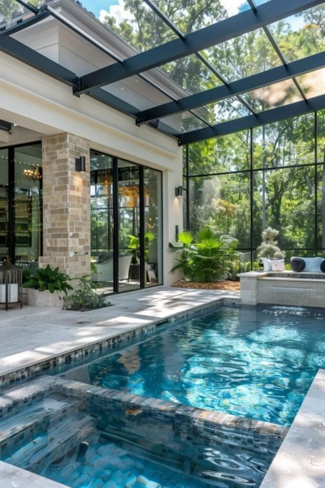
13. Minimalist Pools That Keep Everything Clean and Open
Minimalism tends to work especially well in a tight space, and a pool is no exception to that.
Clean lines, a neutral color palette, and an uncluttered surround all make a small pool feel calmer and more open than a heavily decorated one.
This kind of restrained design also tends to age better than a heavily trend-driven look, staying just as appealing years down the line.
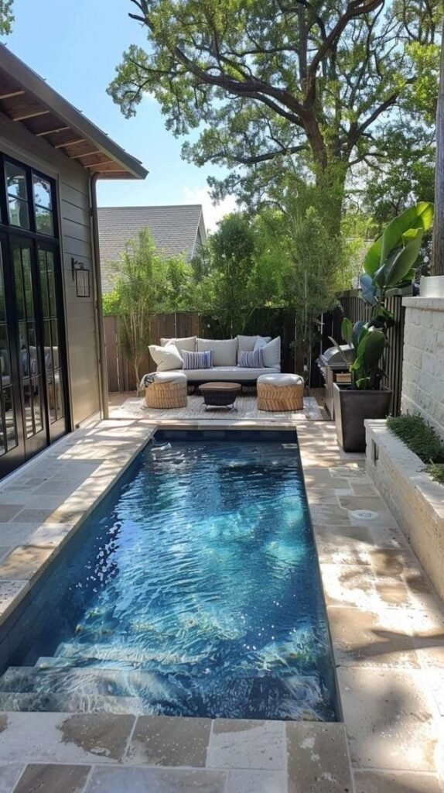
14. Small Backyard Pools With Built-In Seating
Built-in seating changes a pool from a purely swimming feature into a genuine hangout spot.
Benches, ledges, and submerged seats cut down on the need for extra poolside furniture, which saves real space in a smaller yard.
People also tend to stay around a pool longer when there's somewhere comfortable to sit directly in the water, which makes the whole space feel more versatile.
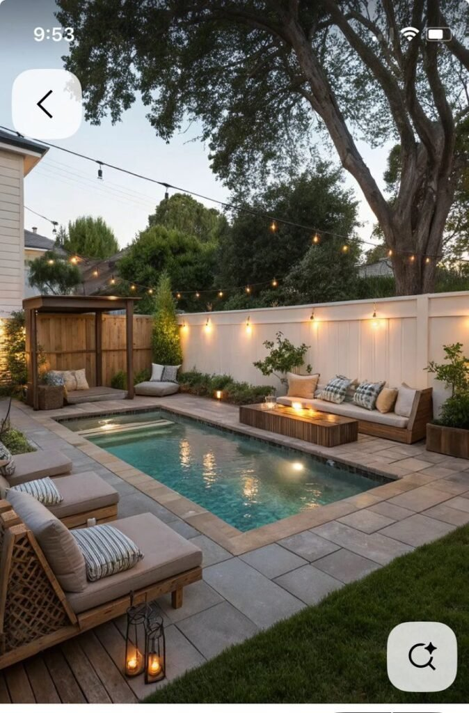
15. Raised Pools That Add Depth Without Taking Space
Raising a pool off the ground instantly adds a sense of dimension, which helps a small yard feel layered instead of flat.
A raised edge creates a visual break between the lounging area and the swimming zone, without needing walls or fencing to do it.
It's an approach that can make even a modest yard feel architectural and considered, especially when paired with a water feature along the raised edge.
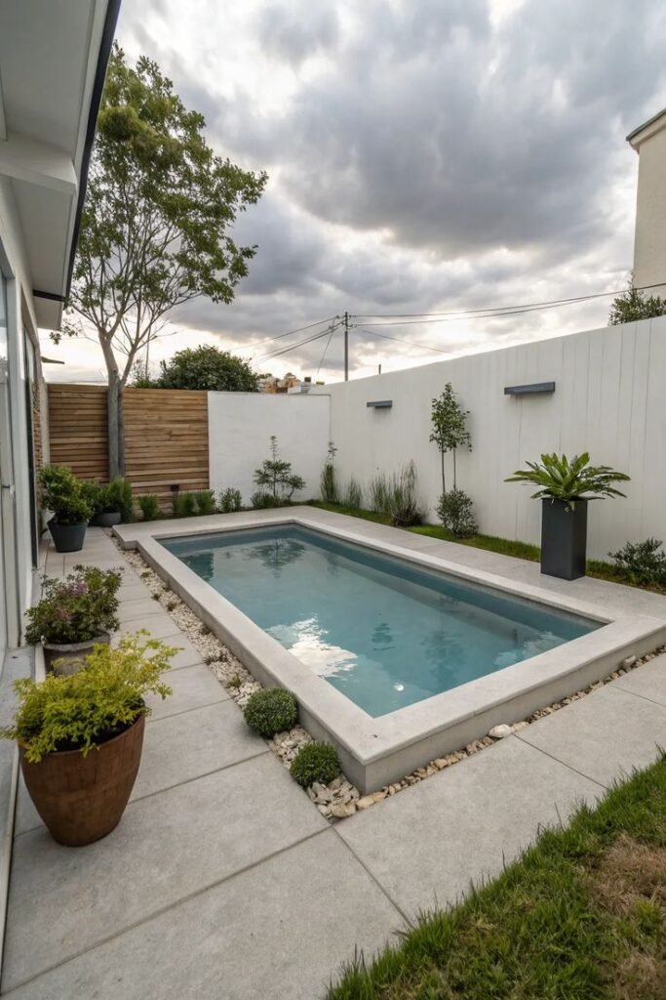
16. Spool Pools That Combine Spa and Pool Functions
For anyone torn between wanting a spa and wanting a pool, a spool solves the dilemma by combining both into one compact footprint.
It delivers the comfort of a spa alongside the fun of a pool, soaking, cooling off, and entertaining, all without needing a large yard.
Spools also work well year-round, since they can be heated in winter and cooled in summer, making them one of the more efficient small-pool options available.
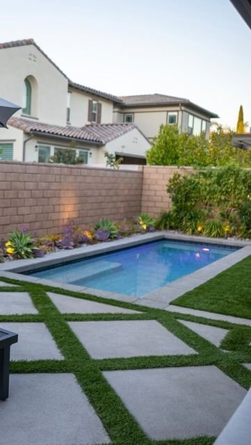
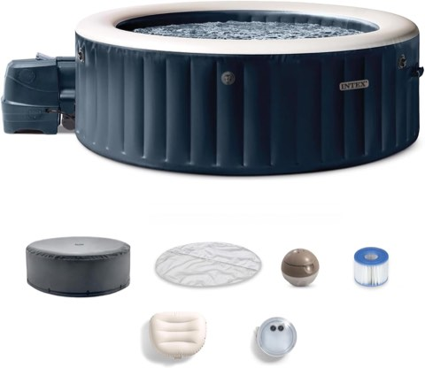
INTEX PureSpa 6 Person Inflatable Hot Tub with Energy-Efficient Spa Cover
Shop on Amazon17. Corner Pools That Use Dead Space Brilliantly
Corners tend to sit unused and a little awkward in most backyards, which is exactly what makes them such a strong fit for a pool.
Placing the pool in a corner frees up the center of the yard for seating, dining, or landscaping, while still creating a natural focal point that doesn't overwhelm the space.
A bit of greenery or a privacy wall alongside the pool makes the whole corner feel intentional rather than like leftover space.
No-Dig Wood Privacy Screen Fence Panel, 61 x 38 Inch, Freestanding
Shop on AmazonSun-E 21 Inch Tall Planters with Removable Insert Shelf, Glazed Ceramic Look
Shop on Amazon18. Narrow Lap Pools That Stretch the Space Visually
A lap pool doesn't need to be wide to earn its keep, a narrow version works especially well in a long, tight backyard that already feels a little boxed in.
The length draws the eye forward, which makes the whole yard read as larger than its actual footprint.
This layout suits a modern home particularly well, feeling intentional and sleek without demanding any extra square footage to pull off.
Hikeen 4M Swim Training Belt Tether for Swimming in Place
Shop on AmazonINTEX Metal Frame Above Ground Swimming Pool, 9 Ft 10 In x 6 Ft 6.75 In
Shop on Amazon19. Plunge Pools That Feel Luxurious, Not Limiting
Plunge pools focus on cooling off and relaxing rather than swimming laps, which happens to match what most homeowners actually want out of a backyard pool anyway.
They fit into awkward side yards and narrow lots that a traditional pool never could, turning overlooked space into a genuine retreat.
Adding built-in seating around the edge lets the plunge pool double as an outdoor living space, not just a place to cool off.
VEVOR 8 Ft Round Stock Tank Pool Liner for Above Ground Pools
Shop on AmazonThe Pod Company Ice Pod Pro Cold Plunge Tub, 110 Gallon
Shop on Amazon20. Courtyard Pools That Turn Privacy Into a Feature
A courtyard-style pool feels intimate and cozy almost by design, especially when the yard is already boxed in by walls or fences on more than one side.
Rather than fighting that enclosed feeling, leaning into it turns a limitation into the whole appeal, these pools feel like a secret retreat, particularly when paired with greenery and soft evening lighting.
The setup ends up reading less like a backyard and more like a private resort, which is a strong outcome for a space that might otherwise feel cramped.
ODTORY Artificial Grass Wall Greenery Backdrop, 12 Panels, 10 x 10 Inch
Shop on AmazonSuncalla 20 Piece Faux Tropical Outdoor Plants with Ferns, Mixed Greenery
Shop on AmazonPlanning Before Choosing a Shape
Before settling on a pool style, it's worth being honest about how the pool will actually get used, lounging, swimming laps, entertaining, since that answer shapes everything else that follows.
Shape tends to matter more than raw size, and it's worth checking local regulations and budgeting beyond just the pool shell itself before committing to a direction.
VINGLI Pool Safety Fence, 4 Ft x 108 Ft, for Inground Pools
Shop on AmazonFloating Pool Safety Alarm for Inground and Above Ground Pools
Shop on AmazonWhy Small Backyard Pools Make So Much Sense
A smaller pool tends to feel more livable day to day, easier to maintain, cheaper to heat, and often more social, since everyone ends up closer together rather than spread across a sprawling deck.
It also rarely means settling for something that looks cheap; smart design consistently beats raw size in the end.
VEVOR Solar Pool Cover, 32 x 16 Ft, 16 Mil Bubble Cover, Blue and Black
Shop on AmazonPOOLWHALE Pool Skimmer Leaf Rake Net with Fine Mesh Deep Bag
Shop on AmazonFinal Thoughts
None of these twenty ideas require a large yard to actually work, most of them work specifically because the yard is small, turning the limitation into the whole design approach.
A clear focal point, a few intentional layout choices, and a willingness to let shape do more work than size will consistently outperform a bigger pool squeezed into a space that was never built for it.